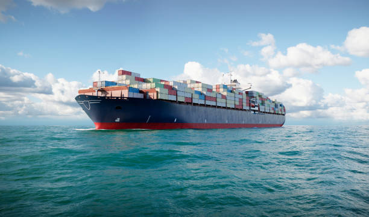

exploring how modern cargo ships are designed and built

Cargo ships are large vessels designed to transport goods across oceans and seas. They are a critical part of global trade because they allow companies and countries to move products efficiently between continents. These ships carry containers filled with electronics, clothing, food, vehicles, and many other materials used in everyday life. Without cargo ships, international trade would be far more expensive and slow.
The production of cargo ships involves advanced engineering and skilled workers in large shipyards. Engineers design ships using computer software to ensure stability, efficiency, and safety. Once the design is finalized, thousands of components are manufactured and assembled together to create a vessel that can travel long distances while carrying enormous loads.